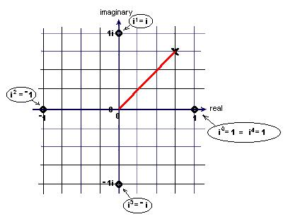
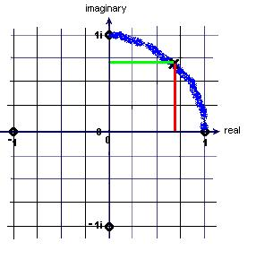

Katie's 4 Days studying with Don, summer '99
1. The binomial expansion
Katie knew (a+b)2 = a2 + 2ab + b2 . She multiplied this by (a+b) to get (a+b)3 = a3 + 3a2b + 3ab2 + b3 We talked about descending powers of a, then she found (a+b)4 = a4 + 4a3b + 6a2b2 + 4ab3 + b4 Using Ian's method (see ch. 9), Katie figured out (after much confusion), the coefficient of the kth term in the n-th row of the binomial expansion.
We used the binomial expansion to find (1+.04/n)^n. Then we connected this to the compound interest below.
2. Infinite series and Katie's ideas about: is .999... =1 ?
After our looking at 1/2+1/4+1/8+...and generalizing A/B +(A/B)^2 + (A/B)^3 +... -> A/(B-A) and lim as n-> inf of (1+1/n)^n = e Katie had this to say:"I argue that .999... , if it were to go to infinity, could never equal 1. It could get as close as we wanted, but could always be closer. Mr. Cohen argues that for all intents and purposes we think of it as 1. He asks me what fraction .333... is. I say 1/3. Then I realize that saying .333... = 1/3 is the same as saying .999.. = 1. We are taught that .333...= 1/3, .666...=2/3 and so on. We say that because these decimals are the closest way to express these fractions. Instead of convincing me that .999...=1, Mr. Cohen convinced me that against the common teaching, 1/3 does not equal .333... and 2/3 is not = .666...
I had full belief of the school teaching until now."
We talked about a monotonic increasing sequence which is bounded above,
converges, has a limit. And I always bring out this quote from Morris Kline that
is in my book: "In his first paper on the Calculus (1669), Newton proudly
introduced the use of infinite series to expedite the processes of the
calculus...
As Newton, Leibnitz, the several Bernoullis, Euler, d'Alembert, Lagrange, and
other 18th-century men struggled with the strange problem of infinite series and
employed them in analysis, they perpetuated all sorts of blunders, made false
proofs, and drew incorrect conclusions; they even gave arguments that now with
hindsight we are obliged to call ludicrous."
-from MATHEMATICS THE LOSS OF CERTAINTY by Morris Kline
Katie said she was confused about the limit of a series and I'm saying that's
OK, for Newton and the other biggies in mathematics were also confused!
3. Compound interest to e.04 and e
4. Complex numbers to
trigonometry to get i1/2
One of Katie's discoveries came in her work here. We talked We worked on i0
= 1,
i1 =
i, i2 = -1,
i3= -i,
i4 = 1,
to i125= i.
Then I had her graph in
in the complex plane, where n is an integer. After
graphing the first 5 points, I asked her where
i1/2
would be on the graph. Katie said it would be on a circle(!!) and marked the x
at the point (3/4, 3/4 i). Almost everyone else I had asked this question, said
it would be on the square formed by the points plotted. We agreed that if the x
was on the circle, the length of the red segment above, would be 1. Katie used
Pythagoras and found the length of the red segment to be Sqrt{(3/4)^2 + (3/4)^2}
= Sqrt{18/16} = (3*Sqrt 2)/4 which turns out to be more than 1.

Katie then sketched in the arc of the circle and
put the x on the circle at 45 degrees, like that above.
To find the point on the circle, I decided we should do some trigonometry.
Starting here, Katie graphed y=sin x, and I asked her to 1). get the equation of the sine wave that was twice as tall, 2). get the equation of the sine wave that had 2 waves in 360 degrees, and 3). get the equation of the sine wave that was shifted 60 degrees to the left. She found these to be y=2sin x, y= sin(2x) and y=sin(x+60) respectively. She also saw the cosine on the dot-circle.
Then we went back to the problem of finding i1/2 above. She realized it would be cos 45 + i sine 45. She then squared cos 45 + i sine 45, and got i. This discussion with Katie was very exciting!
5. Graphing
Katie graphed y=x^2 and then she proceeded to move the parabola up and down, then left and right, made the parabola skinnier, and flipped it over the x-axis and even got into y=x^3 and y=x^4 accidently. She also graphed y=2^x -1 (from the tower puzzle) and y=2^x and we looked at sa problem in cell growth.6. Games and puzzles
Katie was able to do the Chinese ring Puzzle blindfolded, in 38 seconds! She also figured out the metal puzzles I have here.
7. SAT Math Workout and algebra 2 test.
I had Katie work on the SAT test for a while and she did some problems on an algebra 2 test and realized she knew quite a bit. Katie was going to be taking an algebra 2 class in the Fall.